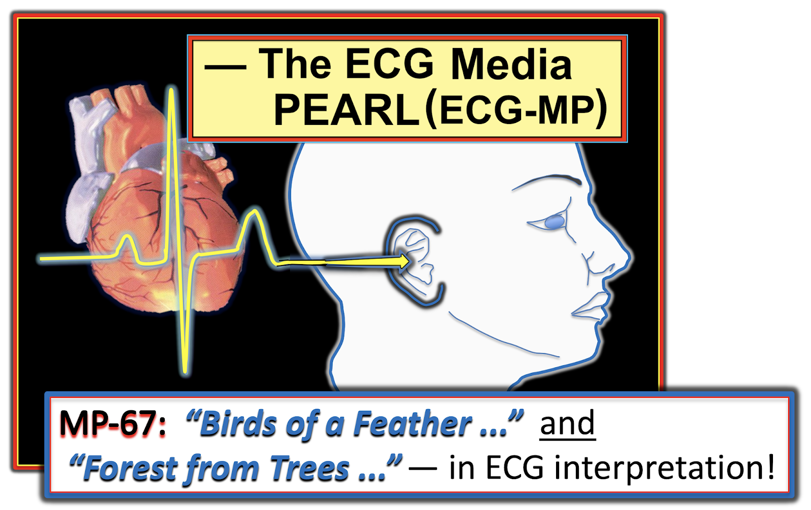
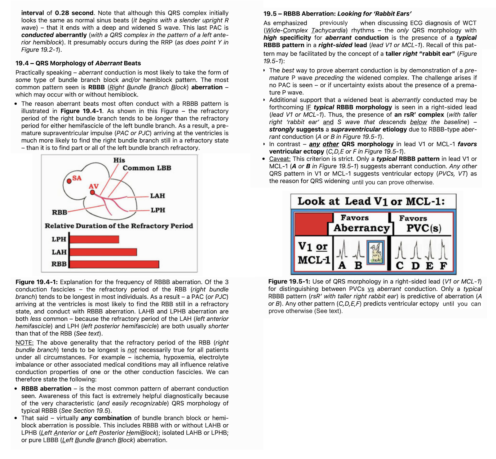

ECG Blog #288 — Ngoại tâm thu thất và một loạt VT?
Dải nhịp dài 3 chuyển đạo ở Hình-1 được ghi từ một phụ nữ lớn tuổi đang chờ phẫu thuật không cấp cứu. Điều đáng lo là ngoại tâm thu thất xuất hiện thường xuyên — với các loạt VT không bền bỉ (nhịp nhanh thất – Ventricular Tachycardia), như thấy ở đầu bản ghi. Bà đã được điều trị bằng nhiều thuốc chống loạn nhịp — nhưng không thành công. Bà ổn định huyết động.
- Bạn nghĩ gì về ca này?
- GỢI Ý: Câu trả lời tối ưu cần đề cập cả chẩn đoán nhịp lẫn xử trí lâm sàng.
=======================================
LƯU Ý #1: Đến đây, một số bạn đọc có thể muốn nghe ECG Audio PEARL dài 8:00 phút trước khi đọc Suy nghĩ của tôi về điện tâm đồ ở Hình-1. Bạn có thể xem Suy nghĩ của tôi về bản ghi này vào bất kỳ lúc nào (nằm bên dưới ECG MP-29).
=======================================

ECG Media PEARL #29 (8:00 phút Audio) hôm nay — Điểm lại Hiện tượng Ashman LÀ GÌ — CÁCH sử dụng nó trên lâm sàng? — và — liệu hiện tượng Ashman có còn chính xác khi nhịp nền là AFib?
- LƯU Ý #2: Để điểm lại chi tiết về Hiện tượng Ashman — kèm minh hoạ ứng dụng lâm sàng của nó — Xin xem ECG Blog #70. Việc sử dụng hiện tượng Ashman khi có AFib được điểm lại trong ECG Blog #71.
- LƯU Ý #3: Tài liệu bổ sung liên quan đến ca hôm nay có ở bên dưới, trong Phần bổ sung.
===================================
CÁCH tiếp cận của TÔI với Ca hôm nay:
Điện tâm đồ ở Hình-1 được gửi cho tôi kèm thông tin lâm sàng hạn chế như trên. Suy nghĩ của tôi như sau:
- Ưu tiên đầu tiên khi đánh giá bất kỳ rối loạn nhịp cấp nào — là bảo đảm bệnh nhân ổn định huyết động. Khi đã làm được điều đó — thì theo định nghĩa, bạn có ít nhất một chút thời gian để đọc nhịp.
- Theo kinh nghiệm của tôi — cách chính xác nhất và tiết kiệm thời gian nhất để đọc bất kỳ rối loạn nhịp tim nào — là dùng một Cách tiếp cận Hệ thống. Như thường được nhấn mạnh trên ECG Blog này — tôi ưa dùng Cách tiếp cận Ps, Qs, 3R (Xem ECG Blog #185).
- ĐIỂM THEN CHỐT (PEARL) #1: Ngoài việc dùng cách tiếp cận hệ thống và dùng compa đo (calipers) — tôi thấy cực kỳ hữu ích khi tìm một nhịp nền. Nói đơn giản — khi có nhiều hơn một đặc điểm đang hoạt động trong nhịp — hãy NHÌN TRƯỚC những yếu tố DỄ đọc hơn. Để dành những yếu tố khó hơn cho sau. Ví dụ, ở Hình-1 — tôi sẽ để dành loạt nhát rộng hơn, nhanh hơn (tức là các nhát #2-đến-6) cho đến sau khi đã đánh giá các phần khác của bản ghi này trông có vẻ dễ đọc hơn.
Áp dụng Cách tiếp cận Ps, Qs, 3R:
Khi xem nhịp ở Hình-1 (trong khi vẫn ghi nhớ khái niệm từ Điểm then chốt #1 trong đầu) — Suy nghĩ của TÔI như sau:
- Tạm thời bỏ qua các nhát rộng hơn (theo Điểm then chốt #1) — QRS ở cả 3 chuyển đạo đều hẹp ở các nhát còn lại ( = các nhát #1; 7-13; 15-20; và 23, 24). Vì vậy — nhịp nền là nhịp trên thất.
- Nhịp nền của các nhát hẹp này không đều (Regular). Do đó, tần số (Rate) thay đổi — nhưng thực sự có nhịp nhanh, vì khoảng R-R hầu như luôn ngắn hơn 3 ô lớn (tức là tần số trung bình rõ ràng trên 100/phút).
- Sóng P có hiện diện — và chúng thực sự có vẻ liên quan (Related) với các phức bộ QRS kế cận, vì hầu như mọi phức bộ QRS đều có sóng P đi trước.
- ĐIỂM THEN CHỐT (PEARL) #2: Hình dạng sóng P dường như thay đổi, gần như từ nhát này sang nhát khác trên toàn bộ dải nhịp ở Hình-1. Hình dạng sóng P thay đổi liên tục này tinh tế nhưng có thật, dù không dễ nhận ra ở chuyển đạo V1 — vì phần lớn sóng P ở chuyển đạo này nhọn. MẤU CHỐT để nhận ra sự thay đổi hình dạng sóng P là: i) Nhận thấy khoảng PR không giữ nguyên; và, ii) Xem sóng P ở từng chuyển đạo được ghi đồng thời. Ví dụ, dù sóng P đi trước các nhát #11, 12 và 13 ở chuyển đạo V1 đều nhọn ở đỉnh — sự thay đổi hình dạng từ sóng P này sang sóng P kế tiếp đi trước chính các nhát #11, 12 và 13 này lại rõ hơn nhiều ở chuyển đạo I và II được ghi đồng thời.
- Nhìn kỹ — các sóng P đi trước các nhát #14, 21 và 24 ở chuyển đạo V1 có vẻ hai pha. Dù đúng là đôi khi khó phân biệt giữa thay đổi hình dạng sóng P do nhiễu đường nền với biến đổi "bình thường" về hình dạng thường thấy giữa sóng P xoang này với sóng P xoang kế tiếp — tôi vẫn diễn giải sự thay đổi hình dạng sóng P mô tả ở trên là có thật.
Tổng hợp lại:
Từ những điều trên (và vẫn chưa xem đến các nhát rộng hơn ở Hình-1 = các nhát #2-đến-6; 14 và 21,22) — chúng ta đã mô tả một nhịp nhanh trên thất (tức là QRS hẹp) không đều hoàn toàn — trong đó có sự thay đổi liên tục từ nhát này sang nhát khác về hình dạng sóng P và khoảng PR. Chẳng phải đây là mô tả hoàn hảo cho MAT (nhịp nhanh nhĩ đa ổ – Multifocal Atrial Tachycardia) là nhịp nền trong ca hôm nay sao?
- MAT không phải là chẩn đoán thường gặp. Vì vậy, để phân biệt MAT với nhịp không đều hoàn toàn gặp phổ biến hơn nhiều (tức là AFib) — chúng ta cần chắc chắn rằng mình đang thấy nhiều hình dạng sóng P khác nhau đang thay đổi liên tục. Điểm then chốt #2 ở trên mô tả cách chúng ta thấy được điều đó!
- ĐIỂM THEN CHỐT (PEARL) #3: Chẩn đoán MAT hầu như luôn gặp trong một trong 2 bối cảnh tạo thuận lợi thường gặp. 2 bối cảnh này là: i) Ở bệnh nhân có bệnh phổi nặng, thường kéo dài; và/hoặc, ii) Ở bệnh nhân bệnh cấp tính nặng có bệnh lý đa cơ quan (tức là nhiễm khuẩn huyết, sốc, rối loạn điện giải và/hoặc toan-kiềm). Nhận biết mối liên quan này quan trọng về lâm sàng — vì thành công trong điều trị MAT phụ thuộc vào việc xác định và điều chỉnh nguyên nhân nền này!
Còn các nhát RỘNG thì sao?
Đã đến lúc trả lời câu hỏi còn lại về nhịp hôm nay = Nguyên nhân của các nhát giãn rộng là gì?
- ĐIỂM THEN CHỐT (PEARL) #4: Có một hiện tượng tôi gọi là "Chim cùng lông" ("Birds of a Feather"). Ý tôi là nếu một sự kiện xuất hiện nhiều lần trong một rối loạn nhịp (như nhiều nhát đến sớm) — và chúng ta biết rằng đại đa số các nhát sớm này là PAC, nhưng lại không chắc về nguyên nhân của vài nhát sớm giãn rộng — "Hãy nghĩ: chim cùng lông thì bay cùng đàn" — nghĩa là thay vì đặt giả thuyết thêm một nguyên nhân khác cho vài nhát giãn rộng này (như PVC) — nhiều khả năng các nhát sớm chưa rõ này cũng là PAC bị giãn rộng do dẫn truyền lệch hướng (Xem Audio Pearl MP-67 bên dưới trong Phần bổ sung để biết thêm về hiện tượng "Birds of a Feather").
Có thêm một số lý do khiến chúng ta biết các nhát giãn rộng trong bản ghi hôm nay là PAC dẫn truyền lệch hướng (và không phải PVC). Các lý do này gồm:
- Nhát rộng đầu tiên ở mỗi vị trí trong 3 vị trí có nhát rộng trên dải nhịp dài rõ ràng có một sóng P đến sớm đi trước (các mũi tên ĐỎ trước nhát #2, 14 và 21 ở Hình-2).
- Sóng P cũng đi trước các nhát rộng khác trên dải nhịp này (các mũi tên HỒNG trước nhát #3, 4, 5, 6 và 22).
- Mỗi nhát giãn rộng ở Hình-2 đều có hình dạng RBBB (blốc nhánh phải – Right Bundle Branch Block), với QRS giãn rộng dương ở chuyển đạo V1 và sóng S tận cùng rộng ở chuyển đạo bên I. Nhát rộng đầu tiên trong mỗi nhóm (tức là các nhát #2, 14 và 21) có dạng rsR' ba pha rất đặc hiệu, vốn rất đặc trưng cho dẫn truyền lệch hướng (Xem Video Pearl MP-28 bên dưới trong Phần bổ sung để được giải thích đầy đủ vì sao hình dạng RBBB là dạng thường gặp nhất khi dẫn truyền lệch hướng).
- ĐIỂM THEN CHỐT (PEARL) #5: Có Hiện tượng Ashman, và hiện tượng này giải thích vì sao các nhát #14, 21 và 22 được dẫn truyền với lệch hướng kiểu RBBB. Như đã giải thích chi tiết trong Audio Pearl MP-29 gần đầu trang này — khoảng R-R đi trước tỉ lệ với độ dài của thời kỳ trơ tương đối tiếp theo. Do đó — các nhát dẫn truyền lệch hướng thường theo sau những khoảng ngưng dài nhất trên một dải nhịp (tức là Các khoảng ngưng dài nhất ở Hình-2 = các khoảng R-R giữa nhát #12-13, và giữa nhát #19-20).
- Vượt ra ngoài phần cốt lõi: BẠN có nhận thấy rằng ngoài hình dạng RBBB điển hình của các nhát giãn rộng — còn có cả hình dạng blốc phân nhánh điển hình ở phần lớn các nhát giãn rộng? Cụ thể — sóng S đi xuống sâu ở chuyển đạo I của các nhát #3, 4, 5 và 6 là đặc trưng của dẫn truyền LPHB (blốc phân nhánh trái sau – Left Posterior HemiBlock) — và QRS âm ưu thế ở chuyển đạo II của các nhát #14 và 21 là đặc trưng của dẫn truyền LAHB (blốc phân nhánh trái trước – Left Anterior HemiBlock). Sự hiện diện của kiểu dẫn truyền blốc hai phân nhánh (RBBB/LPHB và RBBB/LAHB) điển hình luân phiên này là thêm một dấu hiệu nữa ủng hộ mạnh mẽ dẫn truyền lệch hướng.
DIỄN TIẾN của ca này:
Hóa ra bệnh nhân trong ca hôm nay bị hạ kali máu — và có tràn dịch màng phổi hai bên, cần thở oxy. Dù tôi không có thêm thông tin theo dõi — thông tin này cho thấy đã có những yếu tố khác có thể giải thích nhịp không đều của bà.
- Như đã nhấn mạnh ở Điểm then chốt #3 bên trên — thành công trong điều trị MAT phụ thuộc vào việc xác định và điều chỉnh nguyên nhân nền của nhịp này. Việc biết bệnh nhân lớn tuổi trong ca hôm nay có cả hạ kali máu lẫn giảm oxy máu giải thích vì sao điều trị bằng nhiều thuốc chống loạn nhịp đã không kiểm soát được rối loạn nhịp của bà.
- Ngoài nhịp nền là MAT — chuỗi PAC nối tiếp nhanh ở đầu dải nhịp này (tức là các nhát #1-đến-6) tạo thành một loạt Nhịp nhanh Nhĩ, trong đó các nhát #2-đến-6 rộng do dẫn truyền lệch hướng. Không có bằng chứng VT trên bản ghi này. Hy vọng việc điều chỉnh rối loạn điện giải và tình trạng giảm oxy máu của bệnh nhân sẽ giúp giải quyết cả MAT lẫn các loạt Nhịp nhanh Nhĩ.
=======================
Lời cảm ơn: Tôi xin cảm ơn Maurizio Collantoni (từ Siena, Italy) đã gửi ca bệnh và bản ghi này.
=======================
=============================
Các LIÊN KẾT Liên quan đến Ca hôm nay:
=============================
Tài liệu Liên quan Bổ sung cho Ca hôm nay:
- Xem ECG Blog #185 — để điểm lại Cách tiếp cận Ps, Qs, 3R Hệ thống trong đọc nhịp.
- Xem ECG Blog #70 — để Điểm lại Hiện tượng Ashman.
- Xem ECG Blog #71 — để Điểm lại vì sao Hiện tượng Ashman có thể kém tin cậy hơn khi có AFib (cũng điểm lại hình dạng lệch hướng RBBB điển hình).
- Xem ECG Blog #212 — để thảo luận Từng bước một ca khác có Hiện tượng Ashman.
- Xem ECG Blog #211 — Điểm lại VÌ SAO một số nhát sớm và một số nhịp SVT được dẫn truyền Lệch hướng (và vì sao dạng dẫn truyền lệch hướng thường gặp nhất có hình dạng RBBB).
- Xem ECG Blog #65 — để Điểm lại MAT (và vì sao nhịp này có ý nghĩa lâm sàng tương tự nhịp xoang kèm nhiều PAC).
- Xem ECG Blog #199 — để Điểm lại toàn diện về MAT (kèm Video Pearl ngắn giúp dễ nhận biết thực thể này).
- Xem ECG Blog #253 — Điểm lại một ca có nhiều nhát dẫn truyền lệch hướng.
Các bài ECG Blog liên quan đến ca hôm nay:
- ECG Blog #140 — Ví dụ về Lệch hướng kiểu blốc hai phân nhánh luân phiên.
- ECG Blog #14 — Ví dụ về PAC bị blốc.
- ECG Blog #15 — Ví dụ về một WCT do Dẫn truyền Lệch hướng.
- ECG Blog #33 — Ví dụ về PAC với các mức độ Dẫn truyền Lệch hướng khác nhau.
- mm
- ECG Blog #155 — Thế nào là Ổ tạo nhịp Lang thang?
- ECG Blog #200 — Thêm về Ổ tạo nhịp Lang thang (kèm Audio Pearl ngắn về chủ đề này).
===================================
PHẦN BỔ SUNG (ngày 3 tháng 3 năm 2022):
Tôi đã trình bày tài liệu này trước đây — nhưng nó đáng được nhắc lại để tham khảo. Những khái niệm này cần trở thành phản xạ khi đánh giá các nhịp trên thất không đều, nhất là khi nghi ngờ có dẫn truyền lệch hướng.

ECG Media PEARL #28 (4:45 phút Video) hôm nay — Điểm lại VÌ SAO một số nhát sớm và một số nhịp SVT được dẫn truyền Lệch hướng (và vì sao dạng dẫn truyền lệch hướng thường gặp nhất có hình dạng RBBB).
- LƯU Ý #3: Tôi đã trích một bản tóm tắt viết dài 6 trang về Dẫn truyền Lệch hướng từ ACLS-2013-ePub của tôi. Nội dung này nằm bên dưới trong Phần bổ sung (ở Hình-4, -5 và -6).
- BẤM VÀO ĐÂY — để tải bản PDF của tệp 6 trang này về Dẫn truyền Lệch hướng.
=======================================


ECG Media PEARL #67 (9:10 phút Audio) hôm nay — Áp dụng sự thông thái từ 2 câu nói tôi yêu thích vào "nghệ thuật" đọc điện tâm đồ. 2 câu nói này là = "Birds of a Feather" (chim cùng lông thì bay cùng đàn) và "Forest from Trees" (nhìn thấy rừng chứ không chỉ thấy cây).
- Xem ECG Blog #253 — để điểm lại một ca minh hoạ việc áp dụng nguyên tắc "Birds of a Feather".
=================================
Tóm tắt các điểm CHÍNH liên quan đến MAT:

=================================
Trong 3 Hình sau đây — tôi đăng bản tóm tắt viết từ ACLS-2013-ePub của tôi về những điều cơ bản của Dẫn truyền Lệch hướng.
- BẤM VÀO ĐÂY — để lấy bản PDF của tệp 6 trang này về những điều cơ bản của Dẫn truyền Lệch hướng, được trình bày ở Hình-4, -5, -6.


